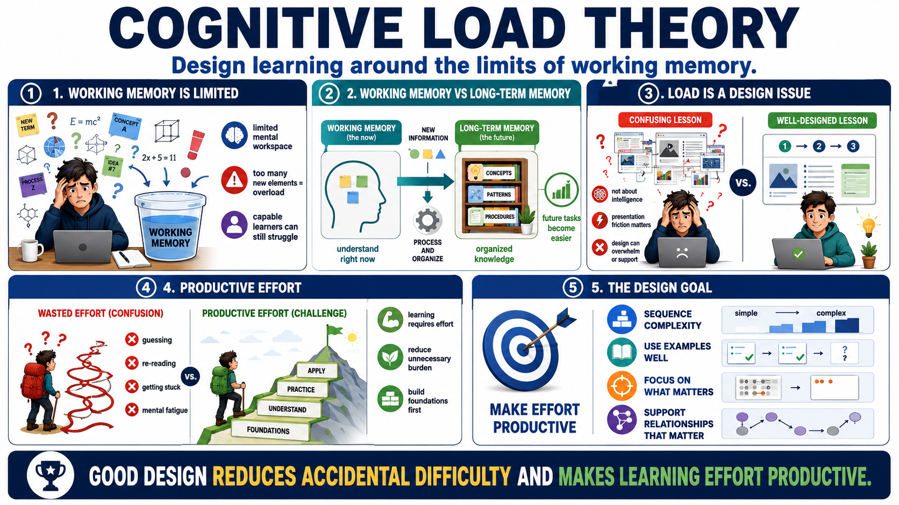

What Is Cognitive Load Theory?
Connecting to LMS... Progress: in progress

Narration
Cognitive Load Theory is a practical framework for designing learning around the limits of working memory. It starts with a simple reality: when people learn something new, they can only hold and process a limited amount of information at one time. If a lesson asks learners to manage too many new elements, unclear examples, busy visuals, and unfamiliar terms all at once, learning can fail even when the learners are capable and motivated.
At a practical level, working memory is the mental workspace learners use while they are trying to understand something right now. Long-term memory is where organized knowledge, patterns, procedures, and concepts are stored. Learning happens when instruction helps people process new information well enough to build useful structures in long-term memory. Once those structures exist, future tasks become easier to understand and perform.
Cognitive load is not a judgment about intelligence. It is an instructional design concern. A confusing course can overwhelm learners with presentation friction, even when the topic itself is reasonable. A difficult topic can also be taught in a way that manages the load carefully, building foundations before asking for independent performance. The difference matters because learners often blame themselves when the design is the real problem.
The goal is not to make learning effortless. Some mental effort is necessary because understanding and skill require work. The goal is to make effort productive. Good design reduces unnecessary burden, sequences complexity, uses examples well, and helps learners focus on the relationships that matter. Cognitive Load Theory gives designers a language for deciding which difficulty belongs to the task and which difficulty was accidentally created by the lesson.